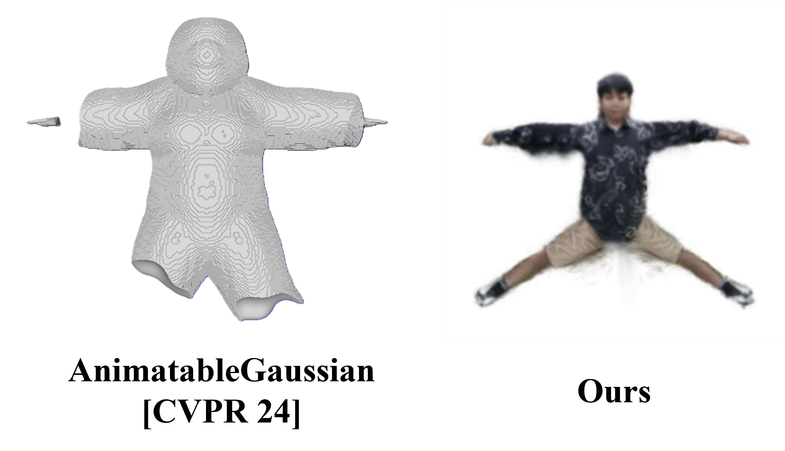
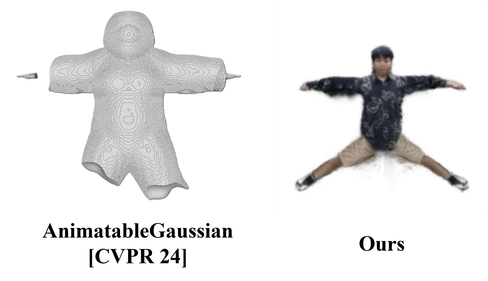
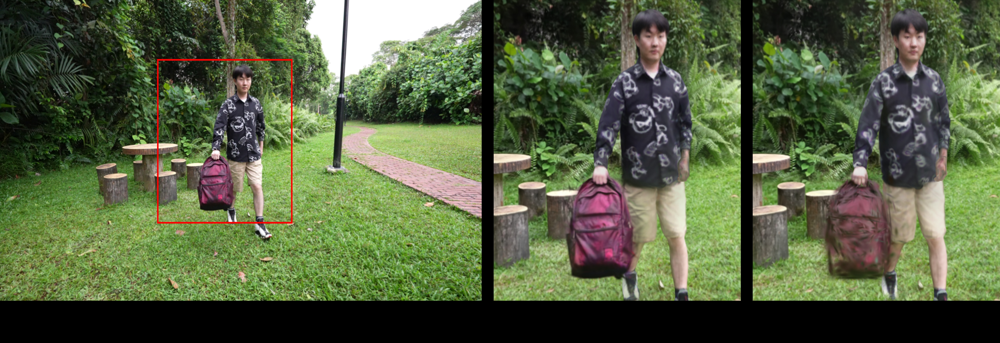
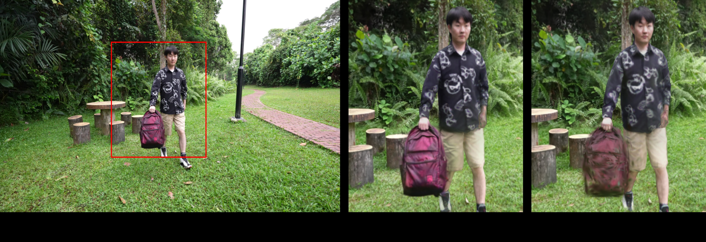

Abstract
Reconstructing dynamic scenes with complex human–object interactions is a fundamental challenge in computer vision and graphics. Existing Gaussian Splatting methods either rely on human pose priors, neglecting dynamic objects, or approximate all motions within a single field, limiting their ability to capture interaction-rich dynamics. To address this gap, we propose Human–Object Interaction Gaussian Splatting (HOIGS), which explicitly models interaction-induced deformation between humans and objects through a cross-attention based HOI module. Distinct deformation baselines are employed to extract complementary motion features: hexplane for humans and Cubic Hermite Spline (CHS) for objects. By integrating these heterogeneous features, HOIGS effectively captures interdependent motions and improves deformation estimation in scenarios involving occlusion, contact, and object manipulation. Comprehensive experiments demonstrate that our method consistently outperforms state-of-the-art human-centric and 4D Gaussian approaches.
_weakness3.jpg) 

_weakness4.png) 

_weakness8.png)
_weakness5.png)
_weakness2_Table1_PA_MPJPE.PNG)
_weakness2_Table2_PA_MPJPE(Hand_Forearm).PNG)
_weakness2_Table3_PA_PVE.PNG)
_weakness2_2.png)